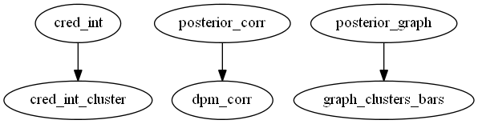

Master index
Index for crp_model_public\analysis_functions
Dependency Graph for crp_model_public\analysis_functions

Generated on Mon 25-Jun-2012 18:34:41 by
m2html
© 2005
 Master index
Master index Master index
Master index